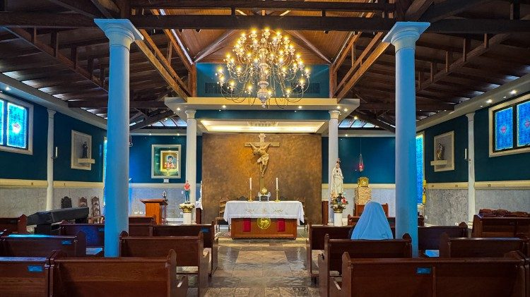
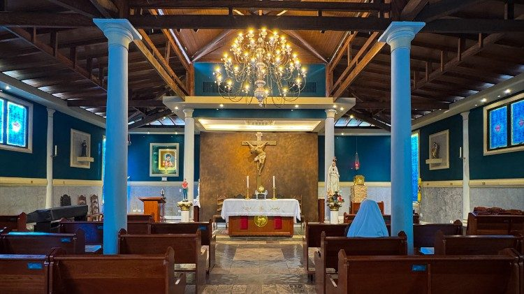
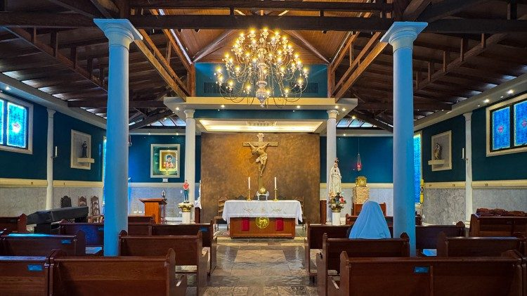

Aqui você vai conhecer a história de um jovem que transformou sua vida simples em algo extraordinário. Carlo Acutis não foi um “super-herói” ou alguém distante da nossa realidade. Pelo contrário: gostava de videogames, adorava mexer no computador e usava a internet como ninguém. Mas ele tinha algo que o fazia diferente — sua amizade profunda com Jesus.
Carlo acreditava que a Eucaristia era a sua estrada para o Céu e usou tudo o que sabia de tecnologia para mostrar ao mundo que Deus está vivo e próximo de nós. Mesmo jovem, deixou um exemplo incrível de como dá para viver a fé de forma verdadeira sem deixar de lado as coisas do dia a dia.
🌟 Neste site, você vai encontrar a vida de Carlo, curiosidades, reflexões, e também como os milagres ligados a ele continuam inspirando milhares de pessoas no mundo inteiro. Mais do que aprender sobre sua história, nossa ideia é que você descubra como a fé pode ser vivida com alegria, coragem e autenticidade, assim como Carlo viveu.
👉 Então, prepare-se: este espaço é para mergulhar na vida de um jovem que mostra que ser santo não é chato, é viver de forma plena e verdadeira!
Desde pequeno, Carlo demonstrava uma espiritualidade madura para sua idade. Gostava de rezar o Rosário, frequentar a Santa Missa e passava longos momentos diante do Santíssimo Sacramento, afirmando que “a Eucaristia é a minha estrada para o céu”. Ao mesmo tempo, era um garoto alegre, comunicativo e cheio de interesses modernos. Adorava esportes, tinha amigos, gostava de videogames, de computadores e de programar sites.
Foi com esse espírito inovador que Carlo começou a criar conteúdos para a internet. Ele montou um site dedicado a catalogar e divulgar os principais milagres eucarísticos do mundo, unindo fé e tecnologia de uma maneira inédita para sua época. Essa atitude rendeu-lhe o apelido de “Ciberapóstolo da Eucaristia”.
Outro aspecto marcante de sua vida foi sua generosidade. Carlo não se limitava à prática da fé apenas dentro da igreja; tinha uma verdadeira compaixão pelos pobres, ajudava pessoas em situação de rua e defendia colegas que sofriam bullying. Mesmo ainda jovem, sabia enxergar o próximo como irmão, vivendo de forma prática a caridade cristã.
Em 2006, Carlo foi diagnosticado com uma leucemia agressiva. A doença avançou rapidamente, mas nem mesmo diante do sofrimento ele perdeu sua fé ou sua alegria. Ofereceu suas dores a Deus pelo Papa e pela Igreja, repetindo sempre que “a felicidade é olhar para Deus e a tristeza é olhar para si mesmo”. Carlo faleceu no dia 12 de outubro de 2006, deixando um testemunho de santidade que tocou profundamente todos que o conheceram.
Após sua morte, sua fama de santidade se espalhou pelo mundo. Jovens e adultos passaram a ver em Carlo um exemplo atual, próximo e acessível de como viver a fé em meio à vida moderna. Em 2020, foi beatificado pelo Papa Francisco em Assis, cidade de São Francisco, que sempre foi uma de suas inspirações. Em 2025, Carlo foi canonizado, tornando-se oficialmente São Carlo Acutis, padroeiro dos jovens e da evangelização digital.
A canonização de Carlo Acutis foi possível graças ao reconhecimento de dois milagres atribuídos à sua intercessão. O primeiro aconteceu no Brasil, com a cura inexplicável de um menino portador de uma grave doença no pâncreas. O segundo foi reconhecido posteriormente, envolvendo outra cura extraordinária, sem explicação médica. Esses sinais confirmaram aquilo que muitos já acreditavam: a vida de Carlo foi um reflexo autêntico da santidade, e até mesmo após sua morte, continua a ser instrumento de Deus no mundo.
Carlo Acutis nasceu no dia 3 de maio de 1991, em Londres, na Inglaterra, enquanto seus pais, Andrea Acutis e Antonia Salzano, estavam por motivos de trabalho no país. Pouco tempo depois, ainda criança, a família retornou para a Itália, fixando-se em Milão. Carlo cresceu em um lar comum, mas desde muito cedo demonstrava traços singulares de fé, sensibilidade espiritual e uma maturidade incomum para sua idade.
Apesar de seus pais não serem profundamente praticantes na época, Carlo mostrou desde os primeiros anos uma inclinação extraordinária para a vida cristã. Aos sete anos, recebeu a Primeira Comunhão de forma especial, antes da idade habitual, graças à sua forte devoção à Eucaristia. Desde então, passou a colocar Jesus no centro da sua vida, procurando frequentar diariamente a missa, a adoração ao Santíssimo e o rosário. Sua frase mais conhecida resume sua fé: “A Eucaristia é a minha estrada para o céu.”
Carlo viveu como qualquer adolescente de sua época: estudava, tinha amigos, amava esportes, jogos de computador e programação. Era apaixonado por tecnologia e rapidamente se destacou como autodidata em informática. Usava seus conhecimentos para ajudar colegas e idosos a lidar com computadores e também para evangelizar. Seu projeto mais famoso foi a criação de um site catalogando todos os milagres eucarísticos reconhecidos pela Igreja, algo que até hoje é utilizado em mostras e exposições ao redor do mundo.
Esse talento com a informática, unido à sua fé, lhe rendeu o título carinhoso de “ciberapóstolo da Eucaristia”. Para Carlo, a internet não deveria ser um espaço de perda de tempo ou superficialidade, mas uma ferramenta poderosa para difundir o Evangelho e levar as pessoas ao encontro com Cristo. Ele mesmo dizia que todos somos “originais” diante de Deus e que não podemos desperdiçar a vida sendo apenas uma “fotocópia”.
Mesmo sendo jovem, Carlo tinha uma vida espiritual intensa. Confessava-se semanalmente, cultivava a amizade com os mais pobres e marginalizados, defendia colegas que sofriam bullying e buscava viver a caridade em gestos concretos. Seu exemplo de bondade era reconhecido por todos que o rodeavam.
No entanto, em 2006, sua vida sofreu uma reviravolta. Aos 15 anos, Carlo começou a apresentar sintomas de fraqueza e febre. Pouco tempo depois, foi diagnosticado com uma forma agressiva de leucemia fulminante. Em poucos dias, seu estado se agravou. Mesmo diante da dor e do sofrimento, Carlo não se revoltou. Ofereceu a sua doença e sofrimento a Deus pelo Papa e pela Igreja, mantendo-se sereno até o fim.
Carlo faleceu em 12 de outubro de 2006, em Monza, Itália. Seu corpo foi sepultado em Assis, a cidade de São Francisco, de quem ele era devoto. Após sua morte, seu testemunho começou a se espalhar rapidamente, conquistando jovens e adultos no mundo todo.
O processo de beatificação foi iniciado em 2013. Em 2018, o Papa Francisco reconheceu suas virtudes heroicas, declarando-o Venerável. Em 2020, após o reconhecimento de um milagre atribuído à sua intercessão – a cura inexplicável de uma criança no Brasil com uma doença rara no pâncreas –, Carlo foi beatificado em Assis. Durante a celebração, o Papa Francisco destacou Carlo como exemplo de santidade juvenil e como modelo para os jovens na era digital.
Atualmente, Carlo é lembrado como um jovem santo da era da internet, um exemplo vivo de como é possível unir modernidade e fé, tecnologia e espiritualidade. Seu testemunho inspira especialmente os jovens a buscarem o essencial, a valorizarem a Eucaristia e a viverem a vida como um caminho para o céu.
O legado de Carlo Acutis é um chamado à santidade no cotidiano, a viver intensamente a fé mesmo nas coisas simples, a usar os dons pessoais para o bem e a nunca esquecer que cada um de nós tem um lugar único e insubstituível no coração de Deus.
Em pouco tempo, Carlo se tornou uma das maiores inspirações para jovens e adultos dentro e fora da Igreja Católica. Nascido em 1991, em Londres, e criado em Milão, Carlo foi um adolescente comum em aparência, mas extraordinário em sua vida espiritual. Desde cedo, demonstrou uma fé intensa e uma devoção especial à Eucaristia, que ele chamava de sua “rodovia para o céu”. Sua vida curta — faleceu em 2006, aos 15 anos, vítima de uma leucemia agressiva — foi suficiente para deixar marcas profundas na espiritualidade contemporânea, principalmente pelo modo como uniu fé, tecnologia e amor ao próximo.
O legado de Carlo pode ser entendido em várias dimensões. Em primeiro lugar, ele mostrou que a santidade é possível na juventude. Muitos adolescentes vivem cercados por dúvidas, tentações e distrações, mas Carlo provou que é possível viver a fé de maneira autêntica, alegre e moderna, sem perder a essência cristã. Ele frequentava a escola, jogava videogames, tinha amigos e gostava de tecnologia, mas sempre colocava Deus em primeiro lugar. Sua rotina era marcada pela missa diária, pelo terço e pela adoração ao Santíssimo Sacramento, práticas que davam a ele uma força espiritual impressionante para a sua idade.
Outro ponto essencial do seu legado é a utilização da tecnologia para a evangelização. Carlo, com apenas 14 anos, começou a desenvolver um site para catalogar os milagres eucarísticos reconhecidos pela Igreja ao redor do mundo. Ele acreditava que a internet poderia ser uma ferramenta poderosa para o bem, desde que usada de forma responsável e com amor. Em um tempo em que muitos jovens se perdem no uso excessivo e negativo da internet, Carlo ofereceu um caminho alternativo: transformar a tecnologia em um canal para aproximar as pessoas de Deus. Esse trabalho continua disponível e já impactou milhares de pessoas que, por meio dele, aprofundaram sua fé.
Carlo também deixou como legado uma mensagem muito clara sobre a vida simples e o desapego. Apesar de crescer em uma família com boas condições financeiras, nunca se deixou levar pelo consumismo. Doava parte de suas economias aos pobres, defendia os mais frágeis e tinha uma atenção especial com os marginalizados. Para ele, a verdadeira riqueza não estava em bens materiais, mas em viver unido a Cristo e ajudar os outros. Sua frase “A Eucaristia é a minha estrada para o céu” resume bem essa centralidade da fé em sua vida.
Após sua morte, em 2006, sua fama de santidade começou a crescer rapidamente. Muitos que o conheceram testemunharam sobre sua bondade, sua pureza de coração e sua dedicação a Deus. A Igreja iniciou seu processo de beatificação em 2013, e em 2020 Carlo foi declarado Beato, após o reconhecimento de um milagre atribuído à sua intercessão: a cura de uma criança brasileira que sofria de uma doença rara no pâncreas. Desde então, seu túmulo em Assis, na Itália, tornou-se local de peregrinação, visitado por milhares de pessoas todos os anos.
Seu legado não está apenas em sua vida curta, mas na continuidade da sua missão. Ele se tornou um símbolo da santidade possível para os jovens do século XXI. Mostrou que não é preciso viver em mosteiros, nem ser uma figura distante da realidade para estar perto de Deus. Pelo contrário, é possível unir a vida comum, a modernidade e a fé de modo harmonioso. Carlo inspira não apenas católicos, mas também pessoas de outras religiões ou sem religião, pela sua bondade, simplicidade e autenticidade.
Além disso, sua figura continua influenciando a pastoral da Igreja, que o usa como exemplo para aproximar os jovens da fé. Em um mundo muitas vezes marcado pelo vazio espiritual e pelo excesso de distrações digitais, Carlo é apresentado como um farol que indica o caminho da verdadeira felicidade, que se encontra em Deus. Seu testemunho reforça a ideia de que a santidade não é algo distante, mas possível a todos, independentemente da idade.
Em resumo, o legado de Carlo Acutis é um convite vivo à santidade no cotidiano, ao uso consciente da tecnologia, ao amor pelos pobres e à centralidade da Eucaristia. Do início ao fim de sua curta vida, Carlo não viveu para si, mas para Deus e para os outros. Seu exemplo ecoa ainda hoje e continuará a ecoar, deixando uma marca indelével na Igreja e no mundo. Ele é a prova de que, mesmo na brevidade da vida, é possível realizar uma missão eterna.
